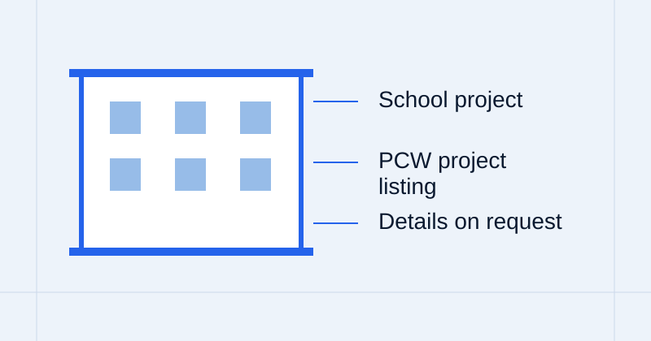
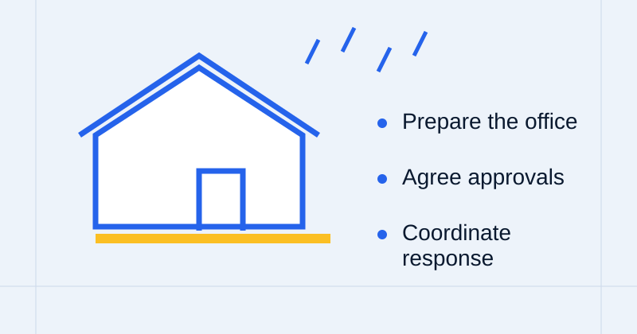
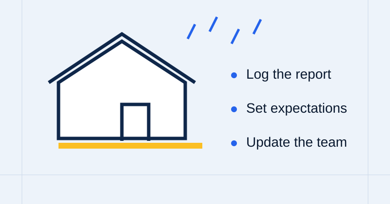
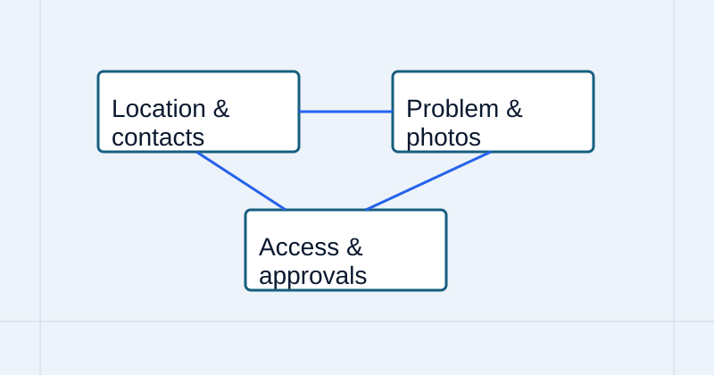

HOA & Commercial Capabilities
Highrise work, concrete, waterproofing, podium decks, and other construction services. Explore the capabilities behind the work.
General service imagery, not project documentation.
Explore capabilities
Commercial & HOA Reconstruction Specialists
Over 37+ years of providing exceptional General Contracting and Specialized Construction Services.
Expert installation and repair of concrete slabs, walkways, and common areas, delivering long lasting results.
View service detailsOur certified installers ensure every waterproofing system is installed to the highest manufacturers’ standards.
View service details37-year history of proven results in identifying and repairing roof related water intrusion.
View service detailsImplement engineered seismic retrofit solutions that strengthen existing structures.
View service detailsRestore or replace dry-rot damaged components to reestablish structural integrity.
View service detailsCustomized monthly maintenance programs designed to proactively address property needs, minimize unexpected repairs, and extend the service life of critical building components.
View service detailsLarge-scale general contracting for building-envelope repair, concrete restoration, and specialized exterior services — scoped, documented, and built to last.
Individual repair and maintenance services with ongoing exterior care, scheduled maintenance programs, and preventative building-envelope protection.
At our core we are PROBLEM SOLVERS that offer construction services. Our CORE RESPONSIBILITY is to contribute to our client’s success.

At our core we are PROBLEM SOLVERS that offer construction services.
We understand that “construction” is forgettable and it’s how you feel and remember the experience that creates a lasting impression.
Built into every project with daily reports, weekly projections, photo documentation, site walks, and resident updates.
With material and construction system options.
Expert assistance for our HOA and large-scale apartment clients.
Our service does not end at the completion of a project or repair. We provide on-going maintenance and support services.
Our CORE RESPONSIBILITY is to contribute to our client’s success.
We focus on your needs, not as a large corporate subsidiary.
For a wide range of waterproofing and construction component systems.
We are material and construction systems certified, and our accounts are always in good standing.
On-going maintenance and support services after project completion.
PCW Contractor License #699611. Licensed and insured for general contracting across Southern California.
B – General Contractor • C39 – Roofing Contractor • C53 – Swimming Pools • C27 – Landscape
Explore PCW’s project listings and service capabilities. Project-specific photography is not yet available for the named school and hospital entries.
Highrise work, concrete, waterproofing, podium decks, and other construction services. Explore the capabilities behind the work.
General service imagery, not project documentation.
Explore capabilities
Tulita Elementary, South Bay Adult School, Lincoln Elementary, Glendale Memorial, and Hoag Hospital. Open the portfolio for individual project listings.
Illustration only. Named-project photographs are not available here.
Explore projects
Roof maintenance, decks, dry rot repairs, windows, and ongoing care. Find the relevant service and its detailed scope.
General service imagery, not project documentation.
Explore capabilitiesDon’t just take our word for it. Read reviews from property managers, HOA boards of directors, property owners, and construction professionals across southern California.
“My associations have used PCW for most of their repair needs – from roof leaks to concrete repairs – fence issues to drywall and have been very happy with the service, the results and the price. I highly recommend that you give them a try.”
“PCW is the very best of the best. It has been my pleasure to have been working closely with them for nearly 30 years. They have superior knowledge, professionalism and the owners and each of their staff members are always awesome! Truly wonderful company. Thank you, PCW. Have a great day, ~ Marti ~”
“Thank you, PCW for stopping the roof leak that no other company has been able to fix. The crew was polite and professional, they arrived when I was told and left the worksite clean, they even showed me pictures of the leak sources they fixed. No leaks in the last rain!!! Much appreciated from a happy homeowner.”
“I have had the pleasure of working with PCW Services for several years, and they continue to be my first-choice contractor for the communities I manage. Their commitment to customer service, professionalism, and responsiveness is truly unmatched. Whether addressing routine maintenance needs, emergency repairs, or large-scale community projects, PCW consistently delivers high-quality workmanship. I greatly value the partnership we have built with PCW!”
“It has been a pleasure working with PCW Contracting Services across several of the communities I manage. Their team consistently delivers high-quality work and demonstrates exceptional professionalism, communication, and responsiveness. They are always proactive in providing updates, addressing concerns, and ensuring projects are completed efficiently. Their reliability and commitment to customer service make them a valuable partner in maintaining our communities. I highly recommend PCW Contracting Services to anyone seeking a dependable and professional contractor.”
“I have been managing the International Tower Owners Association since December 2022, and it has been a pleasure working with Carlos Gutierrez and Ivan Rosales from PCW Contracting Services. Their level of professionalism has been praiseworthy, and I will highly recommend their services to anyone looking for a trustworthy company specializing in high rise reconstruction, structural repairs, maintenance, roofing, and decking waterproofing, amongst other things.”
“As an HOA manager, I’ve had the pleasure of working with PCW for years and couldn’t be happier with the experience. They are consistently responsive, professional, and reliable, with a strong commitment to quality workmanship and customer satisfaction. Their turnaround times are excellent, their pricing is fair and competitive, and they understand the importance of completing projects efficiently while maintaining high standards. What truly sets them apart is how easy they are to work with. They communicate clearly, follow through on their commitments, and approach every project with a can-do attitude. Having a dependable contractor who delivers quality results, responds promptly, and makes the entire process seamless is invaluable in HOA management. I would highly recommend them to any HOA, property manager, or community association looking for a trustworthy, high-quality general contracting partner.”
The layman’s guide and resource for construction information, building components, and practical guides.

Set up your office and yourself for a 10++ fold increase in work orders and requests. Stock additional common office materials, obtain emergency preapproval limits, and pick a trusted vendor.
Read Guide
Recognize the surge, manage inspections and tarps, support overwhelmed staff, and demand frequent status communication from vendors.
Read Guide
Correct contact information, problem description, tarp and emergency repair approvals, pre-approval limits, and gate access codes.
Read GuideHOA / Property Name, Resident Name, contact details, gate codes, and work request – submit below and a PCW estimator follows up within 24 business hours. Prefer to talk? Call (949) 548-9969.
Project Services Division
Excellence at Every Elevation
Project Services Division
Protection that Lasts
Project Services Division
Concrete Solutions - Proven Results
Project Services Division
Designed for Longterm Enjoyment
Project Services Division
Transforming Spaces and Elevating Value
Project Services Division
Lasting Protection – From the Ground Down
Project Services Division
Protecting Decks, Preserving Value
Project Services Division
Strength Renewed, Protection Restored
Project Services Division
Rapid Response, Reliable Solutions
Project Services Division
From Restoration to Refinement
Project Services Division
Restoring Structural Integrity
Project Services Division
Defining Boundaries, Enhancing Properties
Project Services Division
Waterproofing Below with Beautiful Landscapes Above
Project Services Division
Protection Below, Beauty Above
Project Services Division
Quality Overhead, Confidence Below
Project Services Division
Repairing Damage, Restoring Confidence
Project Services Division
Strengthening Structures, Protecting Investments
Project Services Division
Quality Beyond the Surface
Project Services Division
Beautiful Surfaces with Enduring Quality
Project Services Division
Precision Installation with Lasting Protection
Property Services Division
Rapid Response, Reliable Solutions
Property Services Division
Protection that Lasts
Property Services Division
Protecting Decks, Preserving Value
Property Services Division
Strength Renewed, Protection Restored
Property Services Division
Lasting Protection – From the Ground Down
Property Services Division
Enhancing Community Pride & Value
Property Services Division
Concrete Solutions - Proven Results
Property Services Division
From Restoration to Refinement
Property Services Division
Proactive Care – Lasting Value
Property Services Division
Defining Boundaries, Enhancing Properties
Property Services Division
Waterproofing Below with Beautiful Landscapes Above
Property Services Division
Quality Overhead, Confidence Below
Property Services Division
Restoring Safety - Fulfilling Responsibility
Property Services Division
Quality Beyond the Surface
Property Services Division
Detect – Diagnose - Resolve
Property Services Division
Precision Installation with Lasting Protection